Système complet de réservation de traversées maritimes — Application C# Windows Forms & Site Web PHP Laravel
Le projet Sicily Lines est un système complet de réservation de traversées maritimes développé dans le cadre de mon BTS SIO. Il comprend la modélisation UML, la conception d'une base de données MySQL avec 9 tables interconnectées, et le développement de deux applications distinctes : une application desktop en C# avec Windows Forms et un site web en PHP Laravel.
Ce projet m'a permis de démontrer ma polyvalence en développant le même système avec deux technologies différentes, chacune adaptée à un usage spécifique.
Application desktop développée avec Visual Studio 2022 en C# pour la gestion des liaisons maritimes
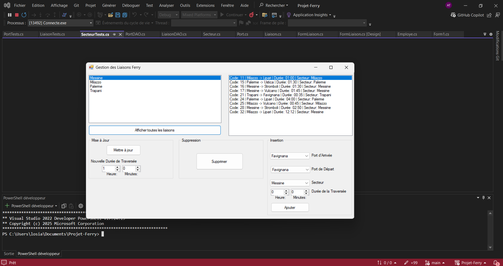
L'interface principale de l'application Windows Forms permet de gérer les liaisons maritimes entre les ports siciliens. À gauche, la liste des ports (Messine, Milazzo, Palerme, Trapani). À droite, les liaisons avec leur code, ports de départ/arrivée, durée et secteur.
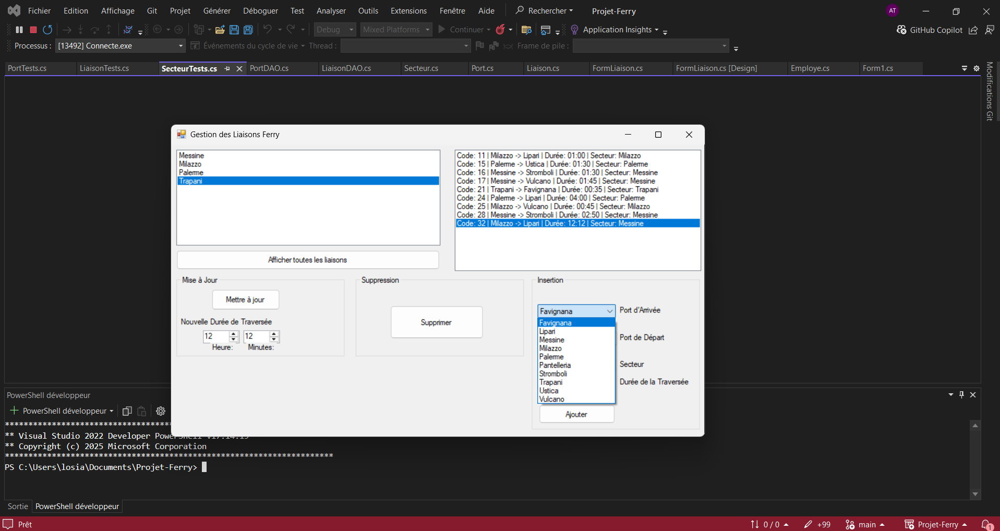
Le formulaire d'insertion permet de créer une nouvelle liaison maritime. Les ComboBox déroulantes sont alimentées dynamiquement depuis la base de données MySQL avec tous les ports disponibles (Favignana, Lipari, Messine, Milazzo, Palerme, etc.).
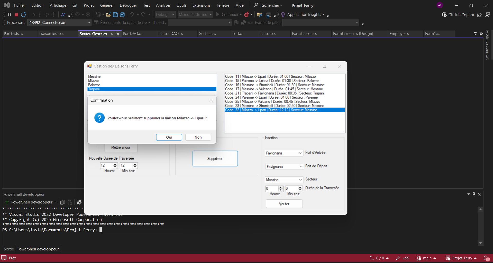
Avant chaque suppression, une boîte de dialogue de confirmation demande à l'utilisateur de valider son action. Ici, la suppression de la liaison "Milazzo → Lipari". Cette sécurité empêche les suppressions accidentelles.
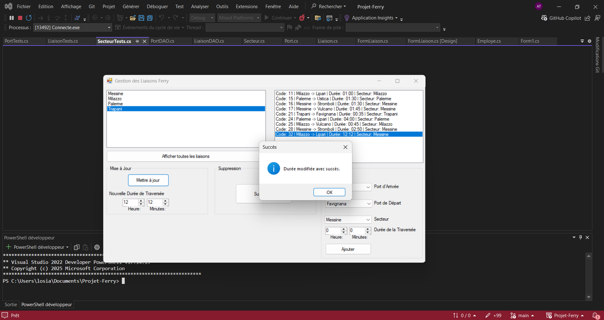
La mise à jour de la durée d'une traversée se fait en sélectionnant la liaison, en modifiant les heures et minutes, puis en cliquant sur "Mettre à jour". Un message de succès confirme l'opération.
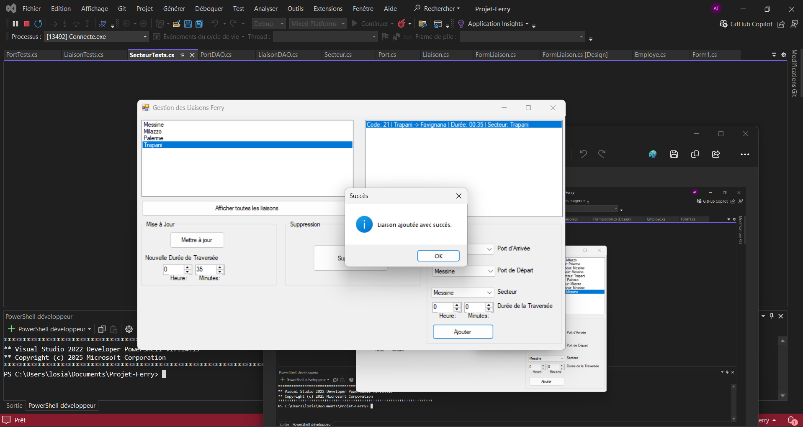
Après l'insertion d'une nouvelle liaison, un message de confirmation s'affiche ("Liaison ajoutée avec succès") et la liste se met à jour automatiquement pour afficher la nouvelle entrée.
Site web complet de réservation développé avec le framework Laravel en architecture MVC
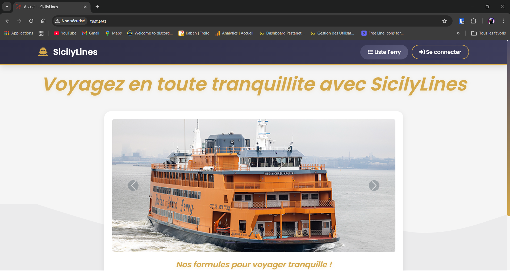
La page d'accueil du site présente la compagnie SicilyLines avec un carrousel d'images de ferrys, le slogan "Voyagez en toute tranquillité" et un accès direct à la liste des ferrys et à la connexion.
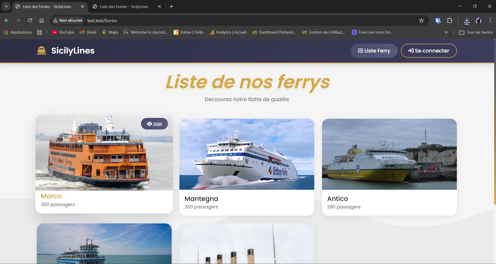
La page affiche tous les ferrys sous forme de cards responsive avec leur image, nom et capacité passagers. Chaque card a un bouton "Voir" pour accéder aux détails du ferry.
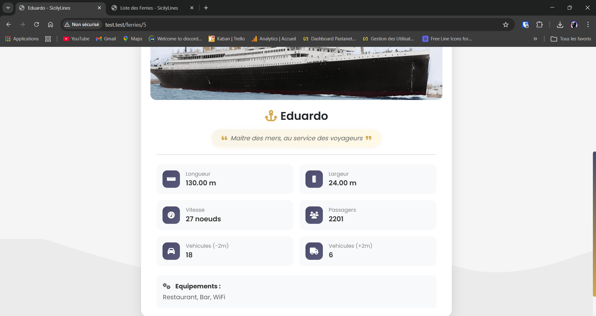
Chaque ferry possède sa fiche détaillée avec toutes ses caractéristiques techniques : longueur, largeur, vitesse, capacité passagers, véhicules (-2m et +2m), équipements et slogan.
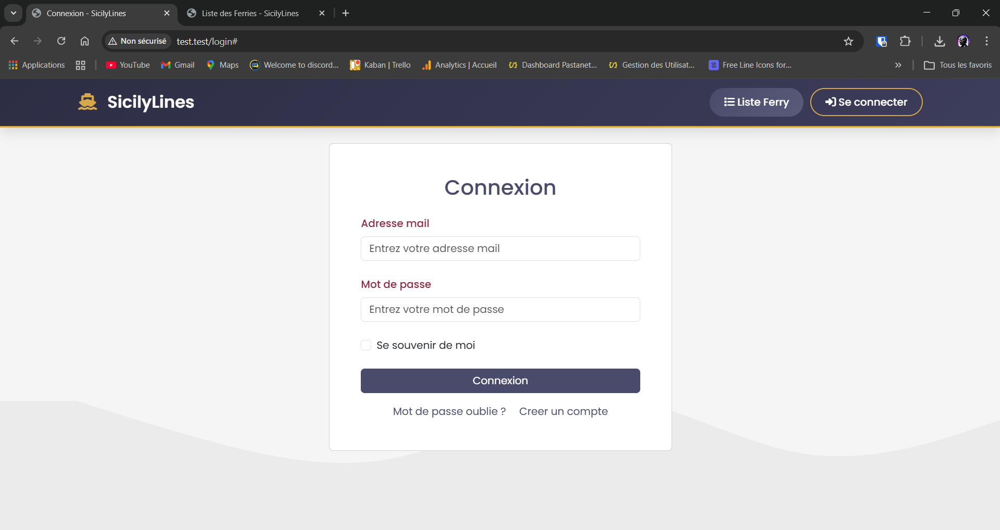
Le système d'authentification permet aux utilisateurs de se connecter avec leur email et mot de passe. Les mots de passe sont hashés avec bcrypt via Laravel. Option "Se souvenir de moi" et liens vers la récupération de mot de passe et l'inscription.
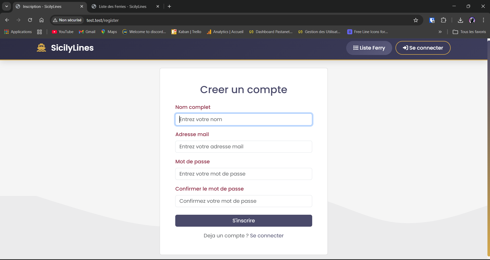
Le formulaire d'inscription demande le nom complet, email, mot de passe et confirmation. La validation côté serveur vérifie l'unicité de l'email et la correspondance des mots de passe.
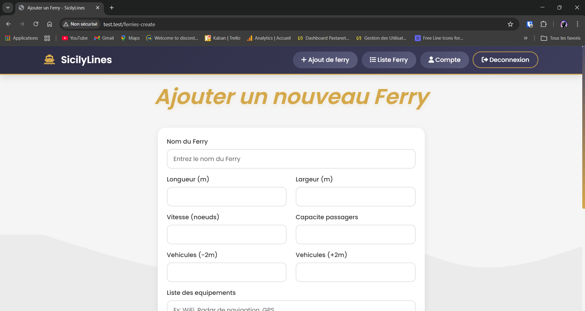
Le formulaire d'ajout permet aux utilisateurs connectés de créer un nouveau ferry avec toutes ses informations : nom, dimensions (longueur/largeur), vitesse, capacités passagers et véhicules, équipements, slogan et image.
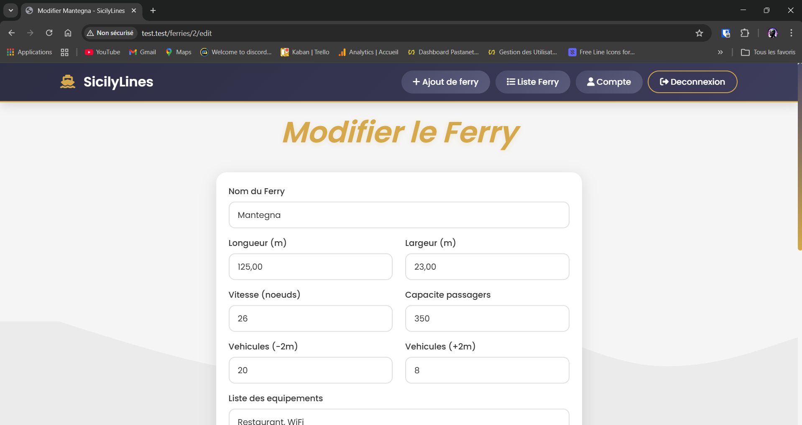
La page de modification pré-remplit tous les champs avec les données existantes du ferry (ici "Mantegna" : 125m, 23m, 26 nœuds, 350 passagers). L'utilisateur peut modifier n'importe quel champ et changer l'image.
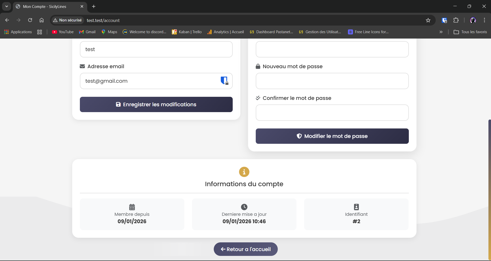
L'espace personnel de l'utilisateur est divisé en deux sections : informations personnelles (nom, email) à gauche et sécurité (changement de mot de passe) à droite. En bas, les informations du compte (date d'inscription, dernière mise à jour, identifiant).